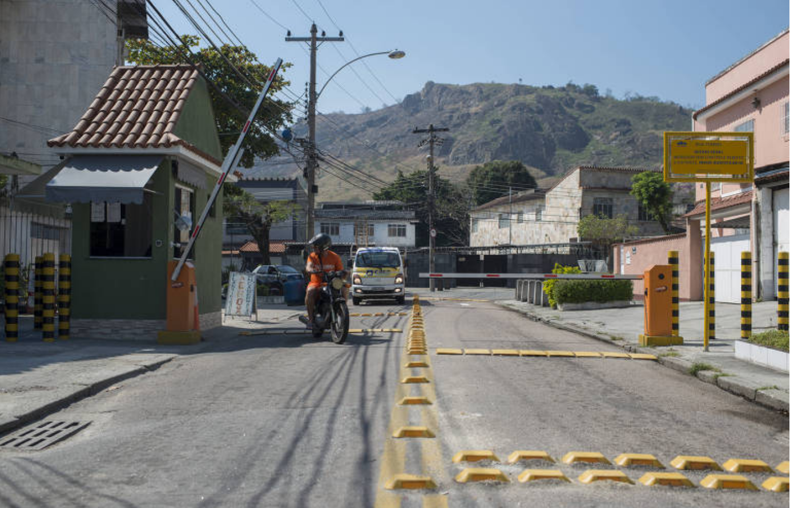
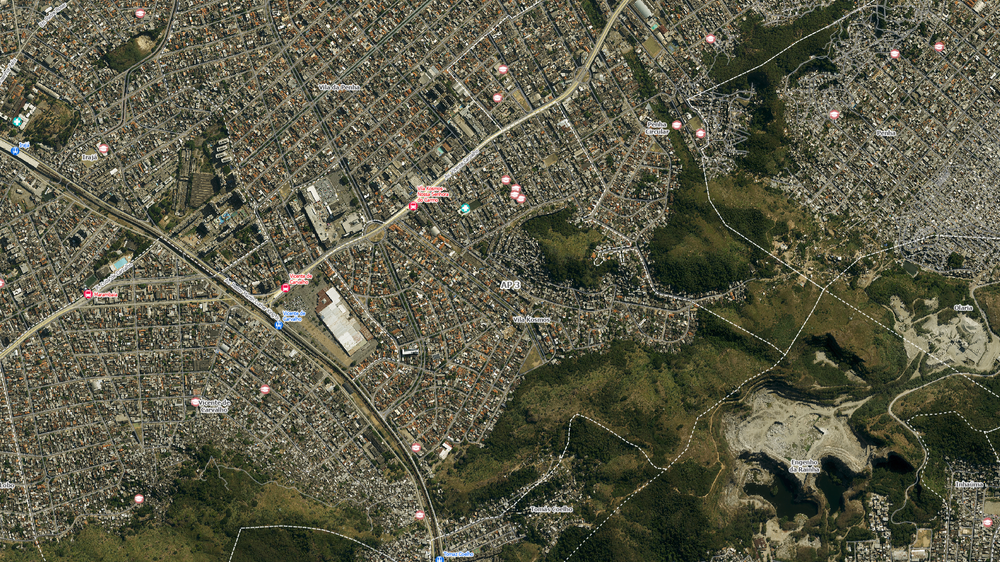
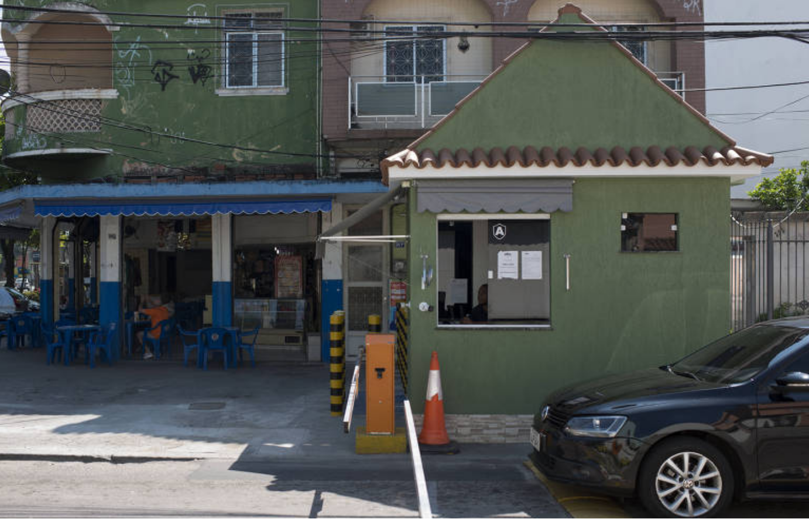

APAVIKOM · Comunicados
Acompanhe as pautas e os encaminhamentos da associação
Veja solicitações realizadas, respostas recebidas, reuniões e próximos passos das iniciativas acompanhadas pela APAVIKOM.
Saiba mais →A APAVIKOM reúne moradores e comerciantes e articula iniciativas para contribuir com a segurança, a organização, a qualidade de vida e o fortalecimento da comunidade em sua área de atuação em Vila Kosmos.

População residente em Vila Kosmos no Censo 2022.
Total de domicílios registrados no bairro no Censo 2022.
Área aproximada de Vila Kosmos na malha territorial do Censo 2022.
32ª posição entre os 159 bairros avaliados pelo Índice de Progresso Social.
Fontes: IBGE — Censo 2022; IPS Bairros 2022.
Vila Kosmos integra o município do Rio de Janeiro e o subdistrito de Irajá. Sua localização oferece acesso a importantes eixos de circulação da Zona Norte, com ônibus, BRT e proximidade das estações de metrô Vicente de Carvalho e Tomás Coelho.
No entorno, moradores encontram comércio, supermercados, farmácias, escolas, serviços de saúde e centros comerciais, incluindo o Carioca Shopping.

A segurança e a circulação estão entre as pautas históricas da APAVIKOM. A contribuição dos associados ajuda a sustentar estruturas e iniciativas mantidas pela associação em sua área de atuação.
Estruturas de monitoramento para apoio ao acompanhamento de pontos da área atendida.
Estruturas complementares de iluminação mantidas pela associação.
Estruturas de apoio à organização da entrada, saída e circulação de veículos na área de atuação.
A APAVIKOM — Associação Parcial Vila Kosmos de Moradores é uma Organização da Sociedade Civil (OSC), constituída como associação privada, fundada em 2014, com sede em Vila Kosmos e cadastro ativo.
Sua atuação é territorialmente delimitada: a APAVIKOM reúne e mobiliza moradores de uma parte de Vila Kosmos e não representa automaticamente a totalidade dos moradores do bairro. A associação consta no Mapa das Organizações da Sociedade Civil (Mapa das OSC), do Ipea.
A associação funciona como um espaço de organização comunitária. Recebe demandas, promove o diálogo entre moradores, organiza iniciativas e pode encaminhar propostas e solicitações a órgãos públicos e parceiros, acompanhando seus desdobramentos.
Conheça nossa atuação
Organização de iniciativas, orientações e demandas relacionadas à segurança e à circulação na área de atuação da associação.
Identificação e encaminhamento de questões relacionadas a iluminação pública, limpeza, vias, calçadas, drenagem e manutenção dos espaços públicos.
Mobilização dos moradores e desenvolvimento de propostas relacionadas à cultura, esporte, convivência e uso dos espaços da comunidade.
Comunicados, reuniões, solicitações, respostas do poder público, atividades comunitárias e resultados das iniciativas acompanhadas pela APAVIKOM.
Veja solicitações realizadas, respostas recebidas, reuniões e próximos passos das iniciativas acompanhadas pela APAVIKOM.
Saiba mais →Moradores podem informar situações relacionadas a iluminação, limpeza, calçadas, vias e outros serviços urbanos. Sempre que possível, indique o local e envie um registro visual.
Enviar uma solicitação →Sugestões e relatos dos moradores ajudam a identificar prioridades e organizar novas iniciativas dentro da área de atuação da associação.
Enviar uma sugestão →Os blocos acima apresentam formas de participação. A publicação de notícias dependerá de comunicados confirmados pela associação.
A APAVIKOM é construída com a participação dos moradores. Ao se associar, você contribui para a continuidade das iniciativas mantidas pela associação e amplia a capacidade de organização, diálogo e mobilização da comunidade.
Entre em contato pelo WhatsApp e solicite as orientações atualizadas para adesão.
Informe os dados necessários do associado e, quando aplicável, dos moradores e veículos vinculados ao endereço.
Consulte os valores, vencimentos e formas de pagamento disponíveis no momento da adesão.
Receba os comunicados da associação, acompanhe as pautas e participe das reuniões e iniciativas promovidas pela APAVIKOM.
Você não precisa esperar surgir um problema para falar com a APAVIKOM. Moradores e comerciantes podem enviar sugestões, acompanhar as iniciativas, participar das reuniões e ajudar a identificar prioridades para a nossa área de Vila Kosmos.